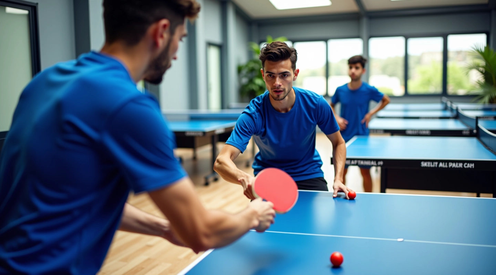
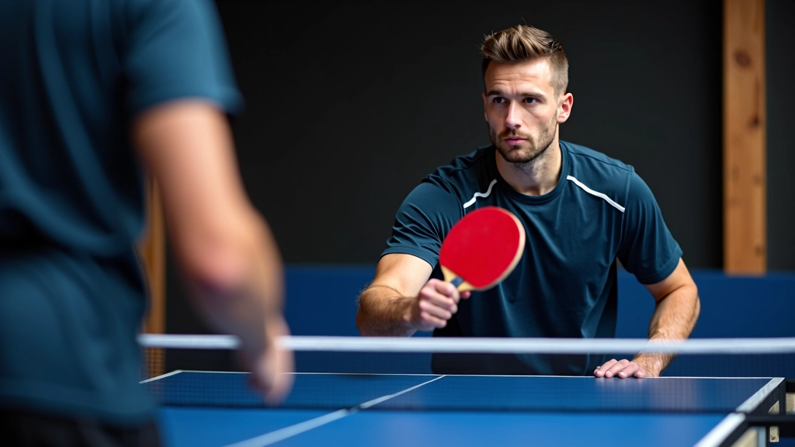

نحن رابط الضربة للخدمات الرياضية
متخصصون في تعليم أنماط استقبال الإرسال في تنس الطاولة. نقدم محتوى عملي وتحليلات دقيقة تساعدك على تحسين مستواك من المبتدئين إلى المحترفين.

ما يميز رابط الضربة
تأسسنا عام 2018 بهدف واضح — توفير معلومات دقيقة عن تقنيات استقبال الإرسال في تنس الطاولة. لم نبدأ بآراء عامة. بدأنا بالملاحظة الحقيقية على الملعب وتحليل ما ينجح فعلاً.
التركيز على التفاصيل
كل درس نكتبه يغطي تفاصيل محددة. الموضع الصحيح للقدمين. زاوية المضرب. سرعة رد الفعل. لا نقول "كن أسرع فقط". نشرح الكيف بالفعل.
خبرة حقيقية
فريقنا يعمل مع لاعبين من مستويات مختلفة. نرى التحديات الفعلية التي يواجهها الجميع. من هنا نأتي بأفكارنا. لا نعمل بنظريات فقط.
المحتوى الحي
تنس الطاولة تتطور باستمرار. أساليب جديدة تظهر. لاعبون يبتكرون تقنيات مختلفة. نحدّث مقالاتنا وأدلتنا بانتظام للبقاء محدثين.
كيف نقدم المحتوى
البحث والتحليل
نبدأ بملاحظة حقيقية. ندرس الحركات بعناية. نحلل ما يفعله اللاعبون الجيدون. نجمع البيانات من التدريبات والمباريات الفعلية.
التنظيم والشرح
نأخذ ما تعلمناه ونضعه في شكل منطقي. خطوات بسيطة أولاً. ثم نتقدم إلى الأشياء الأكثر تعقيداً. كل شيء يُشرح بطريقة واضحة.
التدقيق والمراجعة
لا ننشر شيئاً بسرعة. نراجع كل مقال أكثر من مرة. نتأكد من أن التعليمات صحيحة. نطلب تعليقات من مدربين ولاعبين ذوي خبرة.
التحديث المستمر
الرياضة تتغير. نسمع عن تقنيات جديدة. نختبرها. نضيفها إلى معلوماتنا. هذا يعني أن مقالاتنا تبقى مفيدة دائماً.
العملي قبل النظري
عندما تقرأ درسنا عن استقبال الإرسال الجانبي، لا تحصل على محاضرة طويلة. تحصل على ما تحتاجه فوراً. الموضع الصحيح. الحركة الصحيحة. الأخطاء الشائعة التي يجب تجنبها.
نحن نؤمن أنك تتعلم بشكل أفضل عندما تعرف لماذا تفعل شيئاً. لكننا لا نريد منك أن تقضي ساعات في القراءة. ركزنا على إعطاؤك المعلومات التي تستطيع استخدامها على الملعب اليوم.

ما نغطيه
الأساسيات
الموضع الصحيح. القبضة الصحيحة. الخطوات الأولى في استقبال الإرسال بثقة.
الأنماط المتقدمة
كيفية التعامل مع الإرسالات المختلفة. الدورات الجانبية والأمامية والخلفية.
تحليل الأخطاء
الأخطاء الشائعة التي يرتكبها معظم اللاعبين. كيفية اكتشافها وتصحيحها.
تمارين عملية
تدريبات محددة تحسن سرعة الرد والدقة والمرونة في الملعب.
استراتيجية اللعب
كيفية استخدام فهم الإرسالات في تطوير استراتيجية فعالة للفوز.
النصائح والحيل
خدع وحيل يستخدمها اللاعبون المحترفون لكسب ميزة تنافسية.
ملاحظة مهمة
المعلومات المقدمة على هذا الموقع مخصصة للأغراض التعليمية والإعلامية فقط. النتائج الفعلية تعتمد على عوامل عديدة منها المستوى الحالي للاعب والممارسة المنتظمة والتطبيق الصحيح للتقنيات. نحن نوفر إرشادات وتحليلات بناءً على الخبرة والملاحظة، لكن النجاح في تنس الطاولة يتطلب التزاماً شخصياً والعمل الجاد. ننصحك باستشارة مدرب متخصص إذا كان لديك أسئلة محددة عن تطوير مهاراتك.